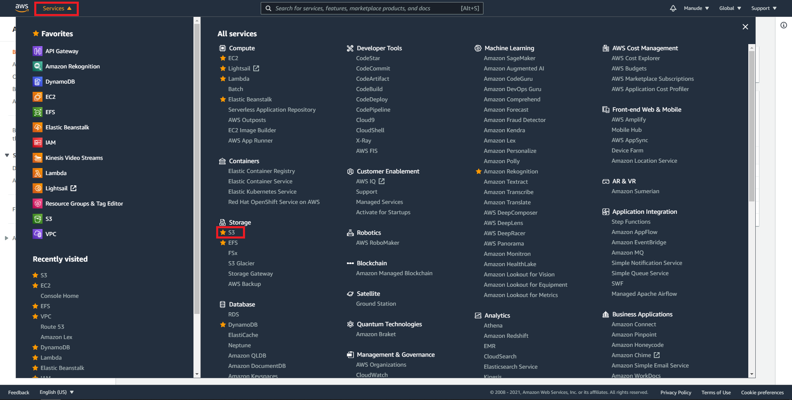
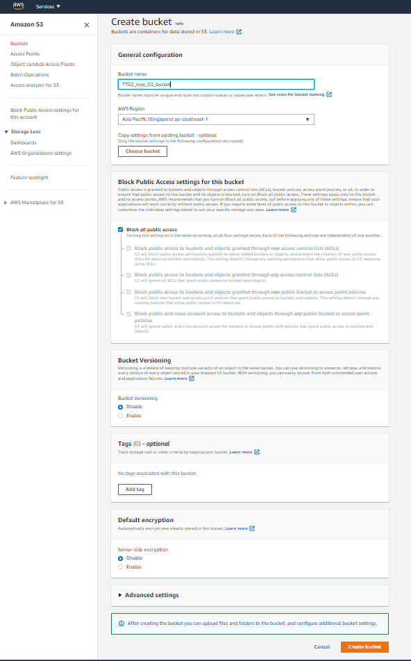
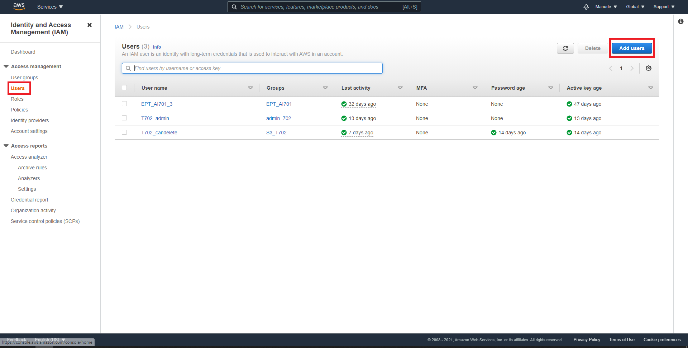
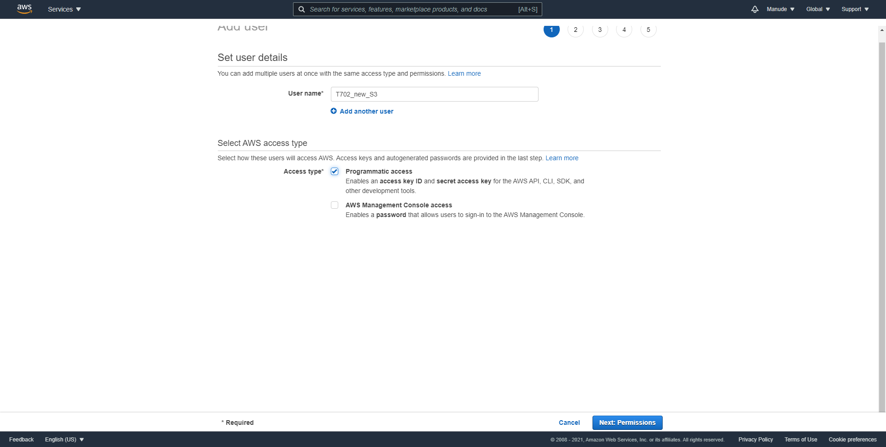
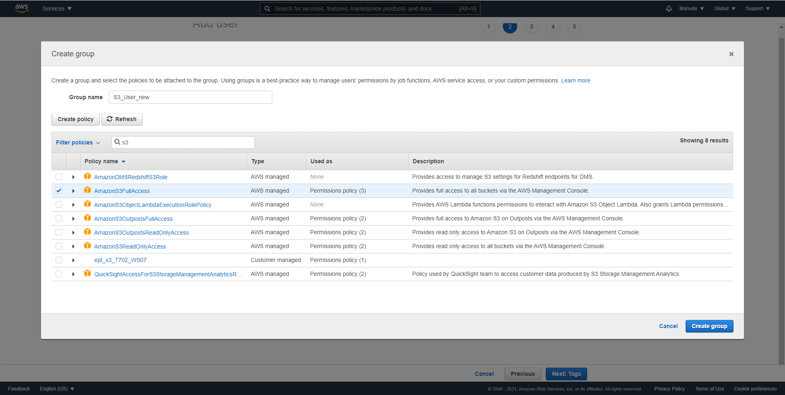
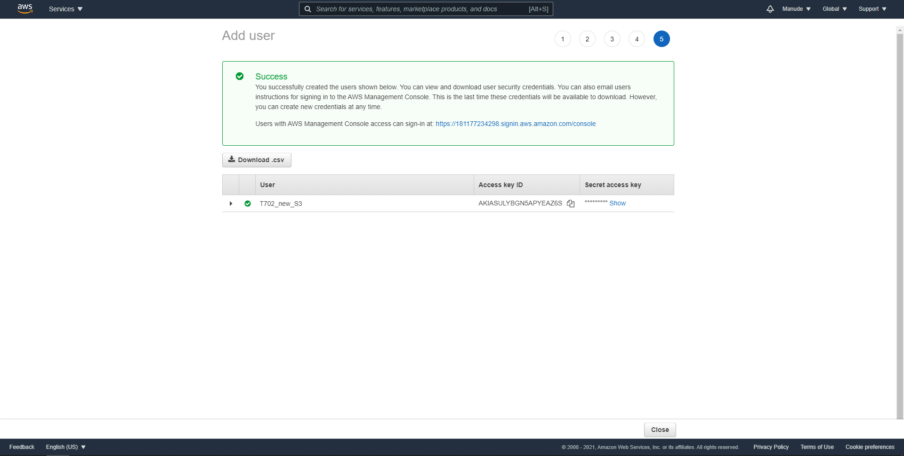
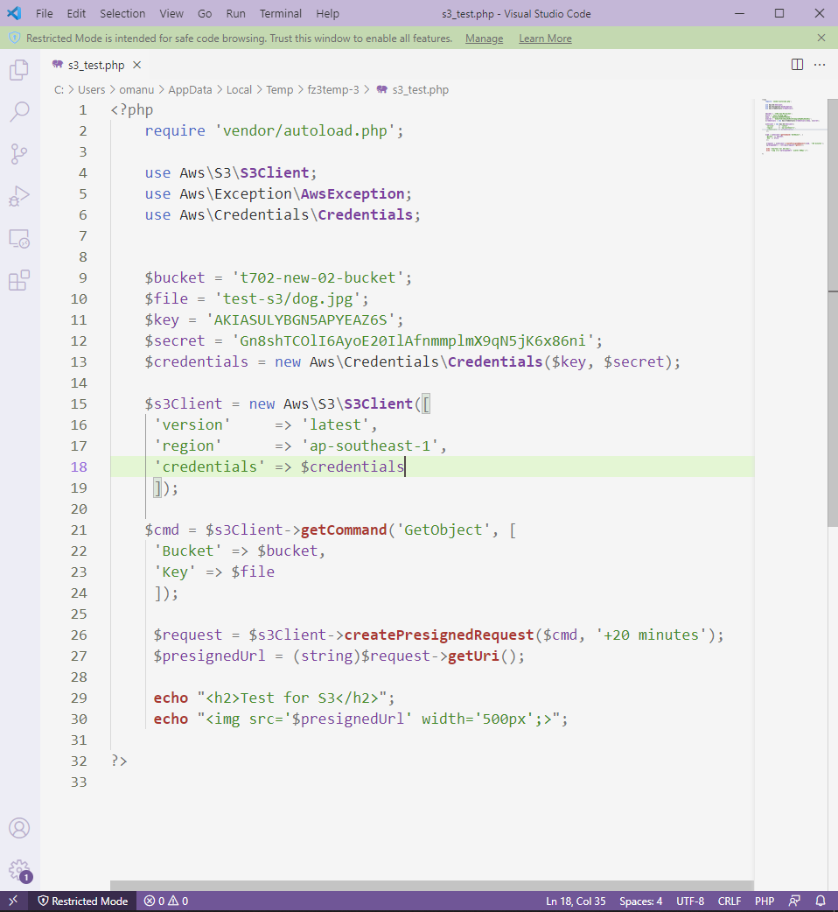
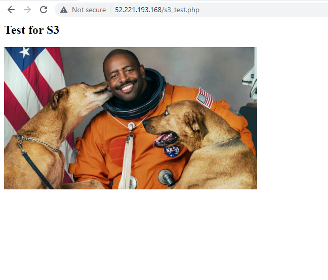

S3 คือบริการ storage ของ Amazon ที่ราคาถูก แต่ก็ต้องแลกมากับการทำานที่ช้ากว่าตัวอื่นๆ ในการ create S3 ให้ เลือกที่แถบ service ต่อมาเลือกที่ S3 ดังรูปด้านล่าง
ขั้นตอนแรกให้เราสร้าง bucket ขึ้นมาก่อน โดยกดที่ create bucket ตั้งชื่อ bucket ที่ต้องการและกด create bucket ได้เลย ตามรูปด้านล่าง
ต่อมาให้เลือกที่ไป bucket ที่พึ่งสร้างขึ้นมา และทำการสร้าง folder และ upload file ขึ้นไปเพื่อทำการทดลองในขั้นตอนไป ต่อมาเราจะทำการลง php composer ตามขั้นตอนต่อไปนี้
Sudo apt update
sudo apt install wget php-cli php-zip unzip
cd ~
curl -sS https://getcomposer.org/installer -o composer-setup.php
HASH=`curl -sS https://composer.github.io/installer.sig`
php -r "if (hash_file('SHA384', 'composer-setup.php') === '$HASH') { echo 'Installer verified'; } else { echo 'Installer corrupt'; unlink('composer-setup.php'); } echo PHP_EOL;"
sudo php composer-setup.php --install-dir=/usr/local/bin --filename=composer
ต่อมาให้ทำการ ลง SDK ของ Amazon โดยพิมพ์
cd /var/www/html
composer require aws/aws-sdk-php
จะได้ directory ชื่อ vender ต่อมาให้ crate role ใน IAM เพื่อใช้ในการ Access S3 โดยเลือกตามรูปด้านล่าง

เลือก Users และ กดที่ Add User ตามรูปด้านล่าง
ต่อมาให้ตั้งชื่อ User และติ๊กเลือกที่ Programmatic access เสร็จแล้วกด next permission
หลังจากนั้นให้ create group ตั้งชื่อ และพิมพ์ s3 ติ๊กถูกที่ s3 Full access ตามรูปด้านล่าง
กด next ไปเรื่อยๆ จนกระทั่งเสร็จจะได้ ID key และ secret access key ให้ copy เก็บเอาไว้เพื่อไว้นำไปใช้กับ SDK อีกทีจะได้ดังรูปด้านล่าง
จากนั้นพิมพ์ตาม code ด้านล่างใส่ key, secret, bucket, file ตามที่ตนเองตั้งไว้เพื่อทำการทดลอง pre-signed s3 และนำรูปใน s3 ออกมาโชว์
จากนั้นให้ทดลองเปิดไฟล์ที่พึ่งสร้างมาบน web browser จะได้ผลลัพธิ์ตามรูปด้านล่างเป็นอันจบการทดลองใช้ S3
